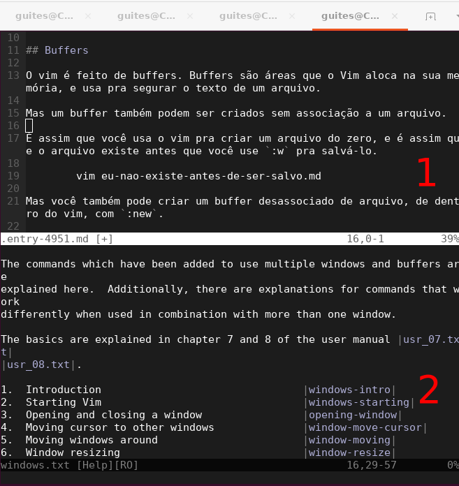

O mínimo para manter a sanidade com tabs no vim
Eu adoro quando vou fazer algo que é pra ser simples e acabo saindo horrorizado com as possibilidades.
O vim é o melhor exemplo de algo que pode ser customizado de tantos jeitos, que 90% das soluções pra qualquer problema envolvem scripts bizarros e key maps alienígenas, que funcionam pra pessoas específicas (a pessoa que inventou, no momento em que inventou, com a chance de funcionar diminuindo pra ela mesma em função do tempo) e falham para todo o resto de forma desastrosa.
Tópico de hoje: tabs. Especificamente, como criar, fechar, criar uma tab a partir de um buffer e gasp mesclar duas tabs em um só buffer.
Buffers
O vim é feito de buffers. Buffers são áreas que o Vim aloca na sua memória, e usa pra segurar o texto de um arquivo.
Mas um buffer também podem ser criado sem associação a um arquivo.
É assim que você usa o vim pra criar um arquivo do zero, e é assim que o arquivo existe antes que você use :w pra salvá-lo.
vim eu-nao-existo-antes-de-ser-salvo.md
Mas você também pode criar um buffer desassociado de arquivo, de dentro do vim, com :new.
Comandos padrões do vim, como :help, também abrem em um novo buffer. Cada buffer é associado à uma janela.

Um mesmo buffer pode aparecer em duas janelas. Isso faz com que a edição do buffer em uma janela seja refletida na outra.
Você pode fechar um buffer com CTRL-w seguido de c.
Várias janelas, contendo um ou mais buffers, são agrupadas em tabs.
TABS!!
Tabs
O vim permite que você use tabs.
Buffers podem estar presentes em uma ou mais tabs, dentro de uma ou mais janelas.
Você pode facilmente transformar buffers em tabs, mas o vim não te permite juntar duas tabs no mesmo buffer.
Parece algo direto, sempre que você pode fazer uma transformação em um sentido
┌────────┬────────┐
│ │ b2 │
│ b1 │ │
│ │ │
├────────┼────────┤
│ b3 │ │
│ │ │
│ │ b4 │
└────────┴────────┘
│
▼
`:tab ba`
│
▼
┌────┬────┬───┬───┐
│ b1 │ b2 │ b3│ b4│
├────┴────┴───┴───┤
│ │
│ │
│ │
│ │
│ │
└─────────────────┘
Você poder fazer no sentido inverso, certo?
┌────┬────┬───┬───┐
│ b1 │ b2 │ b3│ b4│
├────┴────┴───┴───┤
│ │
│ │
│ │
│ │
│ │
└─────────────────┘
│
▼
`???????`
│
▼
┌────────┬───┬────┐
│ b1 │ b3│ b4 │
├────────┼───┴────┤
│ │ │
│ b1 │ b2 │
│ │ │
│ │ │
│ │ │
└────────┴────────┘
Mas não! Cada um pode tentar resolver do seu jeito. Yay
Instalando o Tabmerge
Existem alternativas mas a forma mais direta parece ser o plugin Tabmerge.vim, que resolve de forma prática o problema.
:Tabmerge [tab number] [top|bottom|left|right]
Que pode ser diminuido para
:Tabm 1
Ou o número da tab que você quer juntar com a sua tab atual.
As instruções são bem diretas: coloque o script no seu diretório de plugins e acesse-o diretamente.
Se você usa uma versão do vim maior que a 8 (ver com vim --version | head -n 1), você pode instalá-lo manualmente, criando um diretório plugin direto em ~/.vim:
mkdir -p ~/.vim/plugin
E depois, movendo-o pra lá:
wget https://www.vim.org/scripts/download_script.php?src_id=8828 -O ~/.vim/plugin/Tabmerge.vim
E ele deve funcionar a partir da próxima vez que você abrir o vim. :)
Se você não puder instalar da forma manual, pode utilizar também o VimPlug, adicionando no seu .vimrc
Plug 'https://github.com/vim-scripts/Tabmerge.git'
E depois, rodar :PlugInstall.
Agora você tem suas tabs, mas lembre-se: tabs não são substitutos para buffers!
Referências
Tags: vim